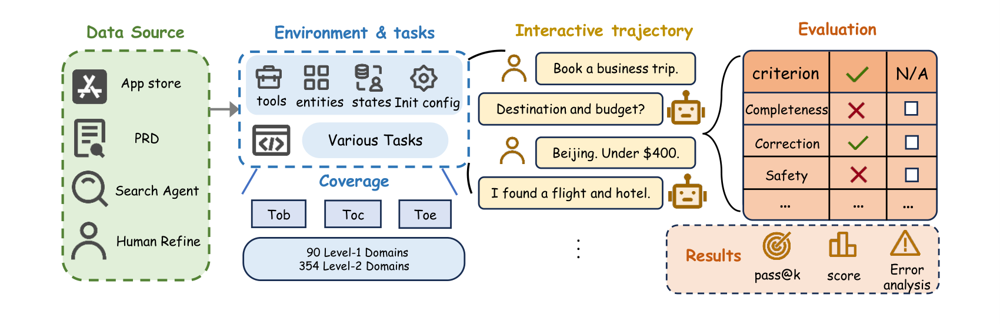
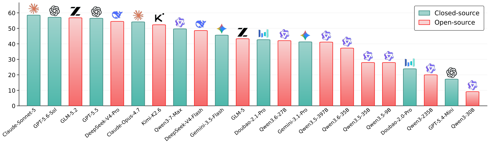
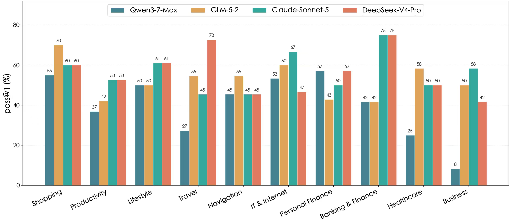
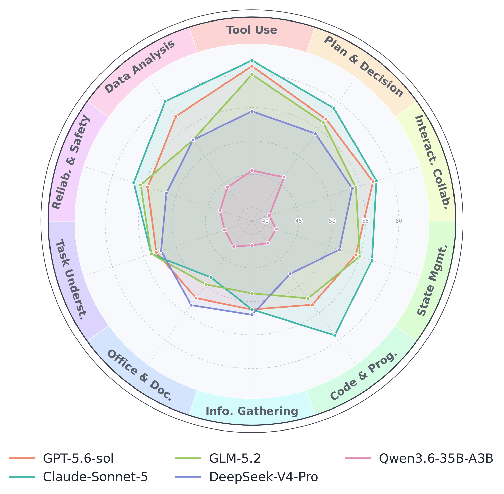
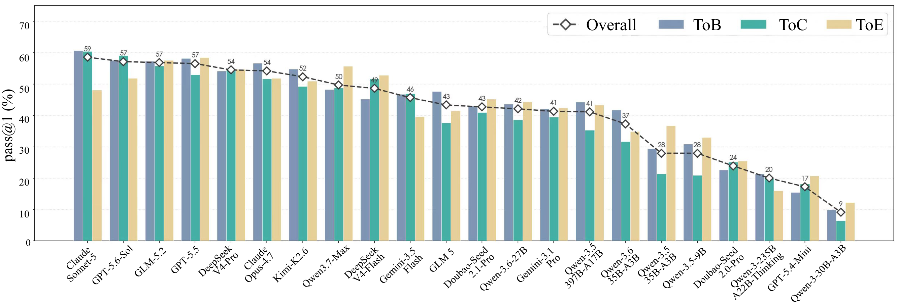
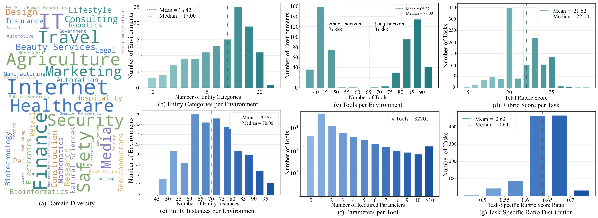
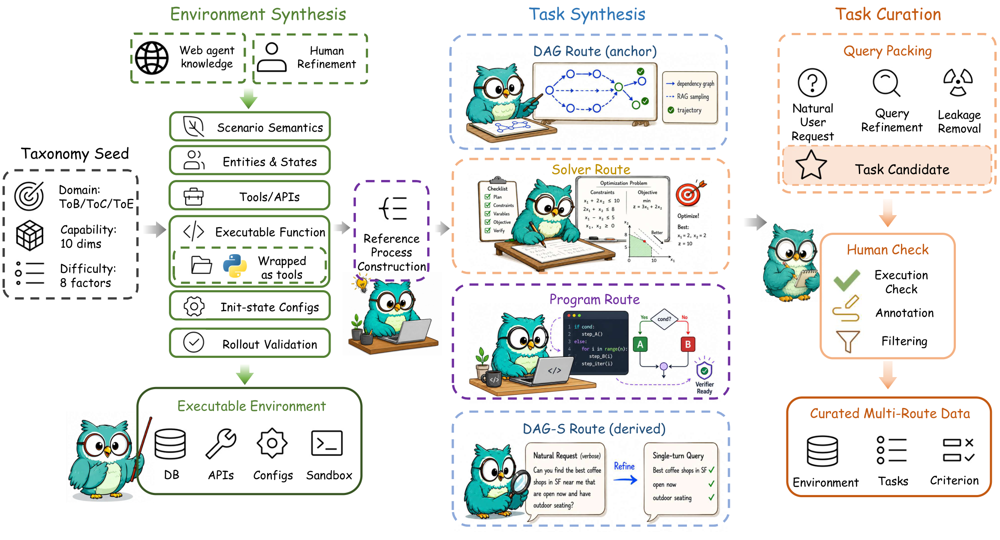
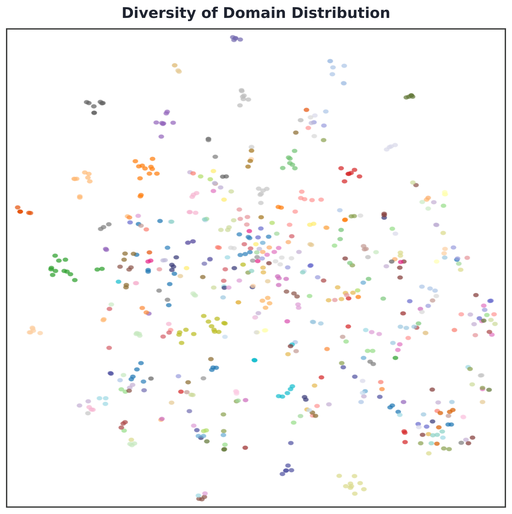
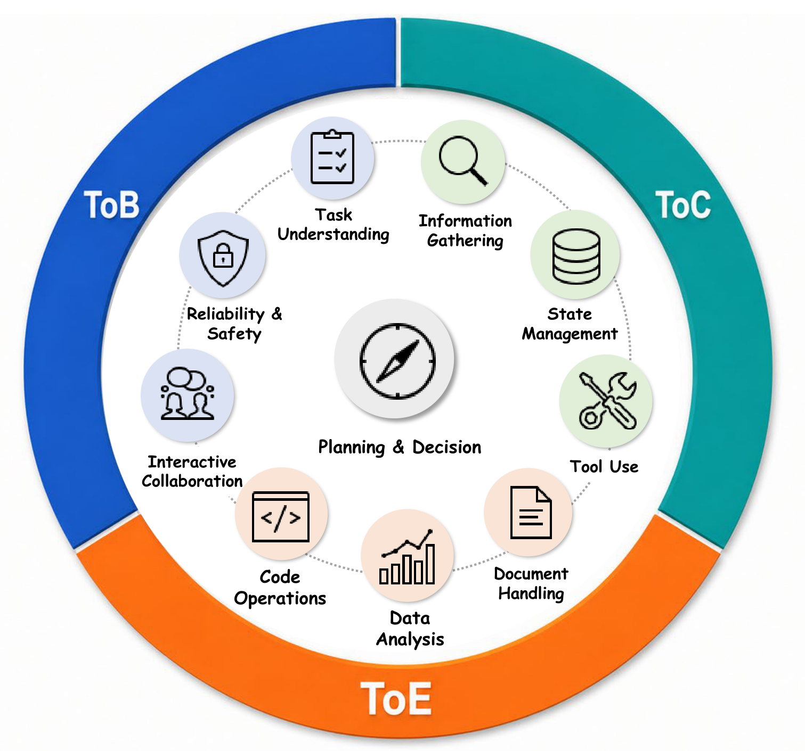

现有智能体基准测试通常局限于有限的场景、工具生态或任务格式，缺乏对真实世界通用智能体应用多样性的覆盖，难以全面评估智能体在多领域、多轮交互、状态跟踪和工具执行等方面的综合能力。
OmniaBench从应用商店、产品需求文档、网络搜索和人工精炼中收集场景知识，构建层次化的ToC、ToB和ToE场景分类体系，并实例化为包含工具、实体、状态和初始化配置的可执行交互环境。任务通过四种路线（DAG、Solver、Program、DAG-S）构建，支持单轮和多轮交互模式，并采用基于rubric和VerifyCode的评估协议。
提出OmniaBench，一个场景丰富且具有挑战性的通用智能体基准测试，覆盖90个一级领域和354个二级领域，基于真实应用生态系统构建可执行任务环境。
OmniaBench从应用商店、产品需求文档、网络搜索和人工精炼中收集场景知识，构建层次化的ToC、ToB和ToE场景分类体系，并实例化为包含工具、实体、状态和初始化配置的可执行交互环境。任务通过四种路线（DAG、Solver、Program、DAG-S）构建，支持单轮和多轮交互模式，并采用基于rubric和VerifyCode的评估协议。
Key Formulas: - $$ \mathcal{P} = (\mathcal{S}, \mathcal{O}, \mathcal{A}, \mathcal{T}, \Omega, \rho_0), $$ 将智能体任务形式化为部分可观测马尔可夫决策过程，包含状态空间、观测空间、动作空间、转移函数、观测函数和初始状态分布。 - $$ h_t = (o_0, a_0, o_1, a_1, \ldots, o_t), $$ 定义智能体在时间步t的历史为观测和动作的交替序列。 - $$ a_t \sim \pi_\theta(\cdot \mid h_t). $$ 智能体的策略根据历史选择动作。 - $$ \mathcal{A} = \mathcal{A}_{\mathrm{msg}} \cup \mathcal{A}_{\mathrm{tool}} \cup \mathcal{A}_{\mathrm{final}}, $$ 动作空间由消息动作、工具调用动作和最终回答动作三部分组成。 - $$ \textsc{User Prompt} = \textsc{Persona} \oplus \textsc{Environment Summary} \oplus \textsc{Task Description}. $$ 用户提示由角色卡片、环境摘要和任务描述三部分拼接而成。









| Metric | Value |
|---|---|
| Datasets | OmniaBench包含1431个任务（完整集）, 其中挑战集644个任务, 覆盖DAG, Solver, Program, DAG-S四种路线。 |
| Metrics | 主要指标为Pass@1（任务完成率）, 此外还报告了用户轮次, 各领域得分, 能力维度得分等。 |
| Best Result | 最佳闭源模型Claude-Sonnet-5总体得分58.54，最佳开源模型GLM-5.2得分56.83，表明OmniaBench对当前前沿模型具有显著挑战性。 |
Takeaways: - 不同模型在领域和能力维度上表现出明显的专业化差异 - 工具使用效率和错误模式分析揭示了模型在状态管理 - 多轮交互等方面的不足 - 评估稳定性分析表明rubric-based评估具有良好的一致性。
Code will be available at paper project page (if applicable).